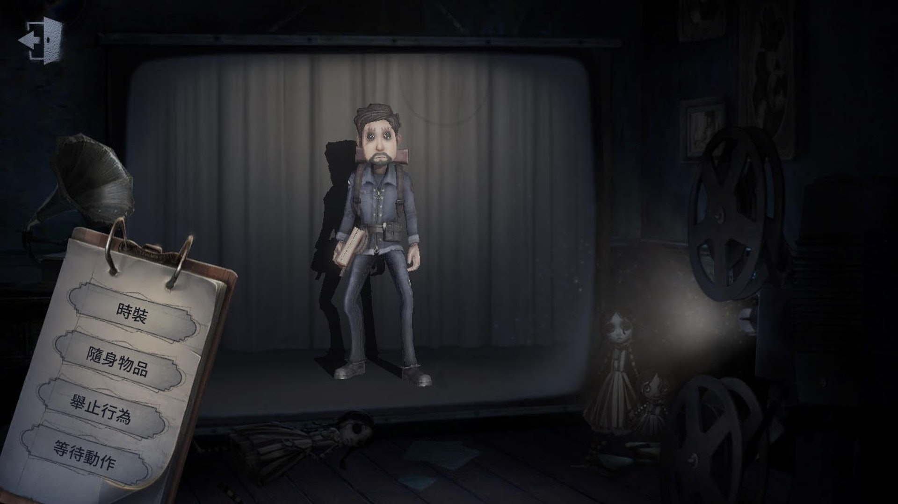
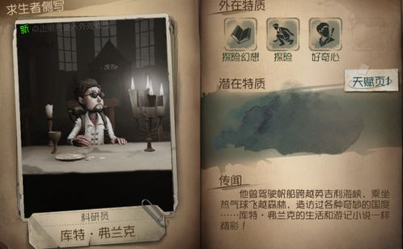

冒險家

【人物介紹】
名字：庫特‧弗蘭克
庫特是一位經驗豐富的冒險家，他熱衷於探索人類的極限，駕駛帆船跨越英吉利海峽，乘坐熱氣球飛越原始森林，當然，也包括參與一場賭上性命的遊戲。作為生存大師，他能夠成為最終獲勝的那個贏家嗎？
【能力介紹】
探險幻想：隨身攜帶格列佛遊記，可讓身體縮小且不會被監管者“雷達”感知，但縮小狀態無法進行大部分交互。
探險：懂得如何藏匿蹤跡，腳印持續時間降低1秒，翻越板窗不會給予監管者提示。
好奇心：破譯過程中喜歡冒險操作，校準觸發概率提升30%，觸發校準時成功判定區域降低30%。
初始道具為格列佛遊記(通稱小人書)，可以讓身體縮小。冒險家是適合跟監管者玩躲貓貓的角色，腳印持續時間降低加上縮小的技能，監管者可能眼睛快脫窗了還是找不到冒險家在哪呢。
